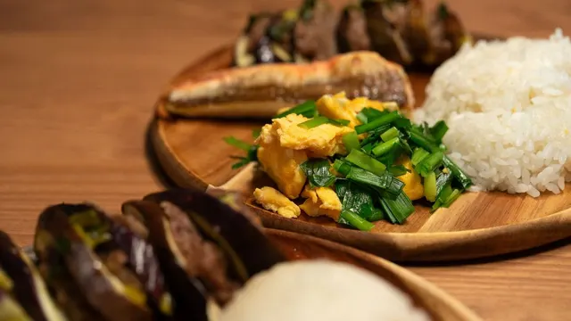
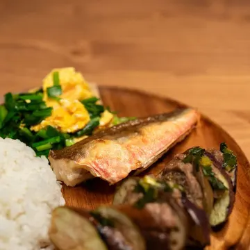

共働きの平日ごはんに。
冷凍の宅配おかずを選ぶ5つのポイント

「帰ってから作る気力がない」「でも外食やコンビニが続くのは気になる」。そんなときの選択肢のひとつが、冷凍の宅配おかずです。ただ、種類が多くて選びにくいので、選ぶときに見るところを5つにまとめました。
冷凍の宅配おかずが向いている人
- 平日の夕食づくりに、30分かけられない日が多い
- 主菜はあっても、副菜まで手が回らない
- 買い物に行く回数を減らしたい
反対に、毎日しっかり料理する時間がある方や、冷凍庫がいつもいっぱいの方は、無理に取り入れなくても大丈夫です。
選ぶときの5つのポイント
-
POINT 1
1食の品数
主菜だけか、副菜まで入っているか。野菜のおかずが欲しいなら副菜の数を見ます。
-
POINT 2
栄養の表示
エネルギー・食塩相当量が1食ごとに書いてあるか。家族で選ぶときの目安になります。
-
POINT 3
冷凍庫に入るか
1食の容器の大きさと、1回に届く数。届いてから入らない、がいちばん困ります。
-
POINT 4
定期便の自由さ
お休み（スキップ）や解約がしやすいか。手続きの締切日も確かめておきます。
-
POINT 5
送料を含めた1食の値段
本体の価格だけで比べず、送料を足して1食あたりにすると比べやすくなります。
あなたに合うタイプは？ 3問で診断
3つ答えると、合いそうなタイプと、下の比較表の該当する列に色がつきます。
タイプ別に比べると
| 項目 | まとめ買い型 | 少しずつ定期型 | 主菜だけ型 |
|---|---|---|---|
| 1食の品数 | 主菜＋副菜2 | 主菜＋副菜3 | 主菜のみ |
| 1回に届く数 | 14〜21食 | 4〜10食 | 10食〜 |
| お休み・解約 | △ 締切が早め | ◯ | ◯ |
| 送料込み 1食 | 600円台 | 600〜700円台 | 400円台 |
| 向いている人 | 冷凍庫に余裕がある | 少しずつ続けたい | 副菜は自分で作る |
※ 一般的な傾向をまとめた架空の目安です。特定の会社・商品の比較ではありません。
まず試すなら「お試しセット」から
どのタイプでも、最初は少ない数のお試しセットで、味と冷凍庫への入り方を確かめるのがおすすめです。少しずつ定期型の例として、お試し4食がある「ことこと膳」を紹介します。

PR
ことこと膳 お試し4食
通常価格 3,480円 → 初回 2,480円（税込・送料込）
※ 通常価格は 2026年8〜10月に販売していた価格、初回価格は 2026年12月31日までのお申し込みが対象です（いずれも架空）。
- 主菜＋副菜3品のワンプレート
- エネルギー・食塩相当量を1食ごとに表示
- お試しは1回だけのお届け（定期便の縛りなし）
この記事は、広告主（ことこと膳）が制作・掲載している広告記事です。制作サンプルとして作った架空の情報サイト・商品で、比較の数字・商品・価格はすべて架空です。実在の会社・商品とは関係ありません。